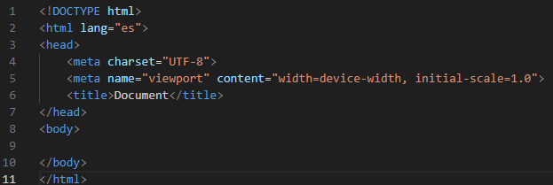

HTML es un lenguaje de marcado que define la estructura de tu contenido. En concreto, consiste en una serie de elementos utilizados para encerrar diferentes partes del contenido para que se vean o se comporten de una determinada manera, lo que lo convierte en el esqueleto del sitio web. Funciona de la siguiente manera, los navegadores web -Chrome, Firefox, Safari, Opera, etc.- leen e interpretan ese código HTML del que están hechos los sitios web con el objetivo de mostrar un contenido que sea entendible para los usuarios que lo visitan. Eso significa que cuando accedemos a cualquier sitio web, el navegador a través del cual lo hacemos, pide al servidor donde está alojado dicho sitio que envíe el documento. Este es un documento HTML que el navegador interpreta para mostrar el contenido al usuario final.
Las “etiquetas” HTML, son fragmentos de texto rodeados por paréntesis angulares <>, que tienen funciones y usos específicos y se utilizan para escribir código HTML, con el intuito de dar instrucciones al navegador sobre cómo mostrarlo al usuario. Es decir, las etiquetas HTML son el lenguaje utilizado para estructurar y definir el contenido en un documento HTML. Estas etiquetas se encuentran en el HTML (o Lenguaje de Marcado de Hipertexto) de cada página.

<!DOCTYPE>: Se utiliza para especificar la versión de HTML que se está utilizando en la página.
<html>: Define el inicio y el final de la página web.
<head>: Esa sería la sección de encabezado de la página, donde incluimos elementos como el título de la página, meta etiquetas, scripts, entre otros. Contiene todo lo que queremos incluir en la pagina HTML que no será visible a los visitantes de la página.
<meta charset="utf-8"> — <meta>. Este elemento establece el juego de caracteres que tu documento usará en utf-8, que incluye casi todos los caracteres de todos los idiomas humanos.
<title>: Es el título de la página web que aparece en la pestaña del navegador.
<styles> Define los estilos que incorporaremos con CSS.
<body>: Es el cuerpo de la página, se incluyen todos los elementos que serán visibles para el usuario.
<p> Etiqueta para párrafo
<h1> a <h6>: Define los encabezados o títulos de diferentes niveles de jerarquía en la página web.
<a>: Define un enlace que el usuario puede hacer clic para ir a otra página web o a una sección diferente de la misma página.
<img>:Si queremos poner una imagen utilizamos el elemento <img>. Se trata de un elemento vacío que requiere de por lo menos un atributo para ser utilizado, ese atributo sería el src (source), que apunta a la imagen que quiere poner en la página, pudiendo así ser una URL relativa o absoluta.
Un ejemplo de esto es, si quieres poner una imagen donde el documento se llama flower.jpg, el código seria así:
<img src=" flower.jpg " />
Si las imágenes estaban en la carpeta imagenes, entonces esas serían las instrucciones:
<img src="images/ flower.jpg " />
El atributo alt se debe a la descripción de la imagen, es utilizada para cuando la imagen no puede ser vista o cuando tarda demasiadamente para mostrarse para el usuario, así que presentamos una descripción para que el usuario entienda lo que sería la figura.
Un ejemplo de esto seria:
<img src="images/flower.jpg" alt="Una increíble flor de color blablalala " />